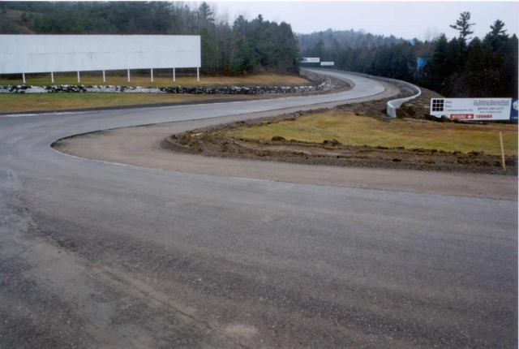
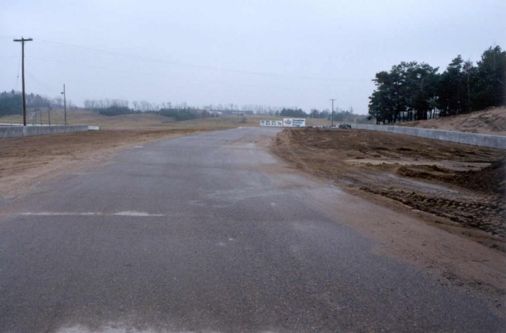
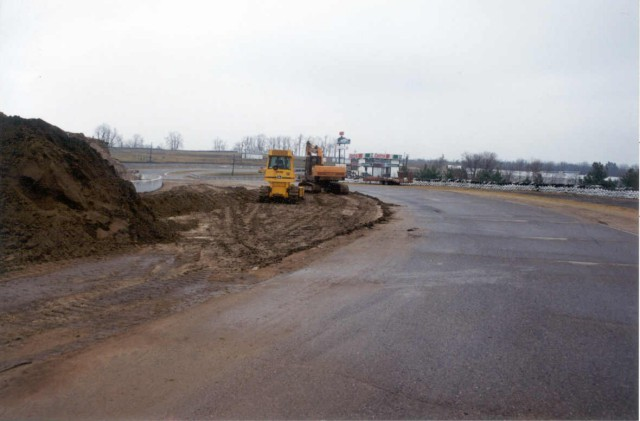
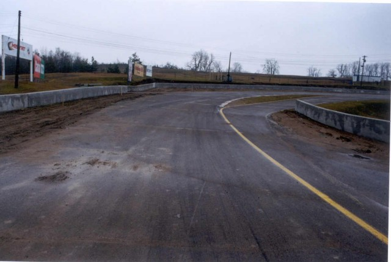

Numbers on the map are the turn numbers. Click hyperlinks above to view the photographs.
Mosport - Renovations (Nov.99), Turn 5B to Turn 10
|| Contents || Start to Turn 5A | Turn 5B to Turn 10 || Home ||
Numbers on the map are the turn numbers. Click hyperlinks above to view the
photographs.
Return to racingcircuits.net's Photo Archive Main Index

6 - Turns 5 & 6 [Compare with photo from 1994]

7 - Looking Back at Turn 8

8 - Turn 9 [Compare
with photo from 1994]

9 - Turn 10 [Compare
with photo from 1994]
| << PREVIOUS PAGE |
| Photographs and Text ©Chris Mann. Reproduced here with kind permission. |